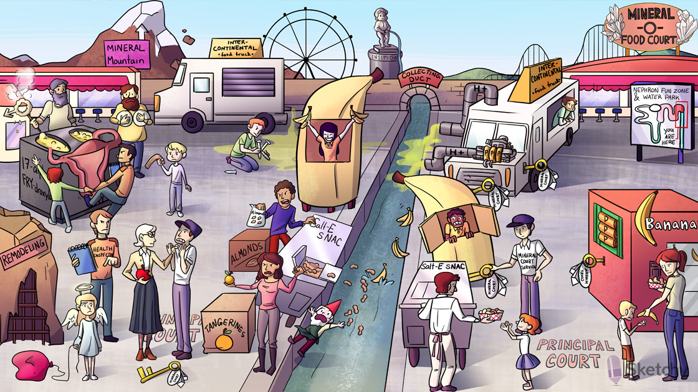

Central gutter: collecting duct
Collecting duct (site of action of the K+ sparing diuretics)
Mineral - O - Food Court: mineralocorticoids (i.e. aldosterone) exert their effects at the collecting duct
Principal court: principal cell of the collecting duct (major site of Na+, K+, and water transport)
Banana vending machine: Na+/K+ ATPase on the basolateral membrane
Three P batteries: ATPase
Food court ground: intracellular compartment
Water in gutter: tubular lumen
Salt-E sNaC cart: : epithelial Na+ channels (ENaC) reabsorb Na+ across the luminal membrane of the collecting duct
Banana stand dumping bananas: : K+ channels allow the excretion of K+ across the luminal membrane of the collecting duct
Salt-E sNaC cart toppling banana stand: reabsorption of Na+ creates a negative luminal potential that facilitates K+ excretion
α intercontinental: α intercalated cell of the collecting duct (major site of H+ secretion)
Battery powered acid pump: H+ATPase on the apical membrane of the α intercalated pumps H+ into the lumen
Mineral court services: intracellular mineralocorticoid (i.e. aldosterone) receptor
Mineral key: aldosterone (a mineralocorticoid)
Mineral key activating the Salt-E sNaC cart: aldosterone upregulates ENaCs on the apical membrane, increasing Na+ reabsorption
Mineral key activating the banana stand: aldosterone upregulates K+ channels on the apical membrane, increasing K+ excretion
Mineral key activating the banana vending machine: aldosterone upregulates Na+/K+ ATPase on the basolateral membrane
Mineral key activating the acid pump: aldosterone upregulates H+ATPase on the apical membrane, increasing H+ excretion
Almonds: amiloride (a K+ sparing diuretic)
Almonds blocking the Salt-E sNaC cart: amiloride inhibits Na+ reabsorption through ENaC
Tangerines: triamterene (a K+ sparing diuretic)
Tangerines blocking the Salt-E sNaC cart: triamterene inhibits Na+ reabsorption through ENaC
Salty sodium peanuts falling into duct: K+ sparing diuretics inhibit Na+ reabsorption at the collecting duct, promoting natriuresis
Apple: eplerenone (a K+ sparing diuretic)
Teacher with apple antagonizing the mineral court services man: eplerenone antagonizes the mineralocorticoid receptor
Spiral-bound notebook: spironolactone (a K+ sparing diuretic)
Health inspector antagonizing the mineral court services man: spironolactone antagonizes the mineralocorticoid receptor
Crumbling mineral mountain: K+ diuretics (e.g. spironolactone, eplerenone) are useful in the treatment of 1 ̊ and 2 ̊ hyperaldosteronism
Failing heart balloon: K+ diuretics (e.g. spironolactone, eplerenone) are useful in the treatment of heart failure
Remodeling: mineralocorticoid antagonists (e.g. spironolactone, eplerenone) prevent myocardial remodeling induced by high levels of aldosterone
Angel: mineralocorticoid antagonists (e.g. spironolactone, eplerenone) decrease mortality in heart failure
insipidus fountain: amiloride is useful in the treatment of Li+ induced nephrogenic diabetes insipidus
Little gnome blocked by almonds and tangerines: amiloride and triamterene are useful in the treatment of Liddle’s syndrome (overactive ENaCs)
Elevated bananas: K+ sparing diuretics can cause hyperkalemia
Acid spill: K+ sparing diuretics cause a normal anion gap metabolic acidosis (by decreasing the function of the H+ATPase)
4 acid tubes: K+ sparing diuretics inhibit the effects of aldosterone in the collecting duct causing a type 4 renal tubular acidosis (RTA)
Big K: type 4 RTA is associated with hyperkalemia
Fried male symbol: testosterone produced from cholesterol
Health inspector inhibiting 17α-”fry”droxylase: spironolactone inhibits 17α-hydroxylase (an enzyme in the testosterone synthesis pathway)
Bubbling ovary shaped vats: spironolactone treats the symptoms of androgen excess in polycystic ovarian syndrome (PCOS)
Bushy beard: symptoms of androgen excess (e.g. hirsutism) in PCOS (treat with spironolactone)
Preventing boy from receiving onion ring: spironolactone directly antagonizes the androgen receptor
Lids on chest: spironolactone can cause gynecomastia
Droopy churro: spironolactone can cause impotence and decreased libido